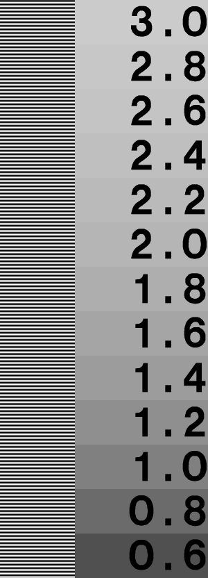

|
Set your browser to the width of the line below for best viewing.
© 1997 by mjh |
|
|
|
|
|
|
||
 |
muse:
|
|
What a month. Actually, two months. Last month I was busily working on putting together an entry for the IRTC using BMRT. At the same time I was trying to teach myself enough about the RenderMan Interface Specification to put together the second of three articles on BMRT. I didn't succeed in the latter and ended up postponing the article by one month. Because I did this I was able to focus more on learning the interface and worry less about writing. I think this strategy worked. The scene I rendered for this month's IRTC is the best I've ever done and I managed to gain enough experience to write a meaningful article on the RenderMan Shading Langauge. One of the reasons I enjoy doing this column is because it exposes me to all sorts of people and software. The world of computer graphics for Linux is constantly growing and the software constantly improves. I hear about new products just about once or twice a week now and I hear about updates to existing packages all the time. It's very difficult to keep track of all the changes (and the fact that I haven't made any updates to the Linux Graphics mini-Howto in some time reflects this), but I enjoy the work. Since things change so often I have found it's never clear how many announcements I'll have for any one month. It's gone from famine to feast - with this month being the feast. Most of the announcements in this month's column are from April alone. I don't know what happened - maybe all the bad weather around the globe kept people inside and busily working and now that the sun's out they're starting to let loose what they've done. I only wish I had the time to examine everything, to play with them all. But my employer would rather I finish my current project first. Has something to do with keeping my salary, so they say. In this month's column, I'll be covering only two related items. The first is a case study on learning to use BMRT. When you submit an image in the IRTC, you are required to submit an ASCII text file describing your image and, to some extent, how you created it. Some people don't put much work into this. I just about wrote a book. Since the information I provided covered more than just BMRT, I thought it would be relavent to this column. The second item is the long-awaited (well, I waited a long time to finish it anyway) 2nd article on BMRT that covers the RenderMan Shading Language. I think this article came out quite good. I've included quite a few samples and some general explanations on what they do. I want to say right up front that I couldn't have done this without lots of help from BMRT's author, Larry Gritz at Pixar. He was a very willing teacher and critic who offered many tips and ideas for my IRTC entry. Most of that also ended up in this article. Many thanks, Larry. I know I said I'd do an HF-Lab article this month too, but that IRTC entry took more time than I expected. It was quite addicting, trying to get things just right. I have started to review HF-Lab once again and will make it my first priority for next month's column. I've already figured out how to use the output from HF-Lab to produce height fields with BMRT. It's quite simple really. Anyway, I hope you enjoy this month's articles. Note: I've been asked by a couple of readers about support for 3D hardware support in the various X servers. I'm going to contact the X Server vendors (Xi Graphics, MetroLink, The XFree Project) as well as Brian Paul (the MesaGL author) and see what they have to say. If you are connected with these folks and have some insight, I'd love to hear what you have to say. Please email me if you know if such support is forthcoming and I'll include it in an upcoming Graphics Muse column.
|

|
|
Disclaimer: Before I get too far into this I should note that any of the news items I post in this section are just that - news. Either I happened to run across them via some mailing list I was on, via some Usenet newsgroup, or via email from someone. I'm not necessarily endorsing these products (some of which may be commercial), I'm just letting you know I'd heard about them in the past month.
| |||||||||||||||
 |
|||||||||||||||
Frame grabber device driver for the ImageNation Cortex I video capture card - Version 1.1This adapter is an 512 by 486 resolution 8bit gray scale video capture card. The device can provide data in pgm file format or raw image data.FTP site: ftp://sunsite.unc.edu/pub/Linux/ apps/video/cortex.drv.1.1.tgz Web Site: http://www.cs.ubc.ca/spider/ jennings/cortex.drv.1.1.tgz |
|
|
3DOM - a new 3D modeller project using OpenGL for Linux3DOM is a 3D Modeler for Unix (using HP StarBase or OpenGL/Mesa) that is free for non-commercial use. Source code is available. Binaries for Linux/Intel, SGI, Sparc Solaris and HP-UX are also availalbe.
It's not quite 'ready for prime-time', meaning there is
almost no documentation
and there is still a lot of work to do on the user interface.
http://www.cs.kuleuven.ac.be/
|
||||||||||||
|
|
|||||||||||||||
Pixcon/Anitroll R1.04I found this in my /tmp directory while getting ready for this month's column. I couldn't find a reference to it in any other Muse columns, so I guess I must have just misplaced it while preparing for an earlier issue. Hopefully, this isn't too out of date.Pixcon & Anitroll is a freely available 3D rendering and animation package, complete with source. Pixcon is a 3D renderer that creates high quality images by using a combination of 11 rendering primitives. Anitroll is a forward kinematic heirarchical based animation system that has some support for some non-kinematic based animation (such as flock of birds, and autonomous cameras). These tools are based upon the Graph library which is full of those neat rendering and animation algorithms that those 3D faqs keep mentioning. It also implements some rendering techniques that were presented at Siggraph 96 by Ken Musgrave and was used to generate an animation for Siggraph '95. New features since version 1.03:
http://www.radix.net/~dunbar/index.html Comments can be emailed to dunbar@saltmine.radix.net. Pixcon is available either through the above web site or at Sunsite. It is currently under: /pub/Linux/Incoming/pixcon104.tgz and will be moved to: /pub/Linux/apps/graphics/pixcon104.tgz NOTE: there is a file pixcon1.04.tgz in those directories, but it's corrupted. Be sure to get the correct files. |
|||||||||||||||
|
|
|||||||||||||||
ELECTROGIG 3DGOELECTROGIG is a software company specializing in 3D solid modeling, visualization and animation software. The latest version of 3DGO (version 3.2), a modeling animation and raytracing package, is now available for the Intel Linux platform. A beta version is also available for the MkLinux platform. Take a look at the benchmarks for Linux on the intel platform: http://www.gig.nl/products/prodbench.html.3DGO was originally developed for the SGI platform and is available for the SGI, SUN and HP platforms. For more comprehensive information about 3DGO, check out the WWW-site: http://www.gig.nl/products/prodinfo.html. You can download a demo-version of 3DGO for linux, this version has all functionality, except the save functions. Go to our download area: ftp://ftp.gig.nl/demo/. Please read the .txt files before downloading.
ELECTROGIG Technology
|
|||||||||||||||
|
|
|||||||||||||||
|
|
|
libgr V2.0.12A new version of libgr, version 2.0.12, is now available from ftp.ctd.comsat.com:/pub/linux/ELF/libgr-2.0.12.tar.gz.
libgr will build shared libs on Linux-ELF and on HP/UX. |
||||||||||||
|
|
|||||||||||||||
EPSCAN - scanner driver for EPSON ES-1200C/GT-9000 scannersEPSCAN is a scanner driver for EPSON ES-1200C/GT-9000 scanners. It includes a driver and a nice Qt-based X frontend. It allows previewing, and selecting a region of an image to be scanned, as well as changing scanner settings. It only supports scanners attached to a SCSI port, not to the parallel port.
EPSCAN can be found at
The driver should work for any of the ES-{300-800}C / GT-{1000-6500} models as well, but has not been tested on these.
|
|||||||||||||||
|
|
|||||||||||||||
Inlab-Scheme Release 4Inlab-Scheme Release 4 is now available for Linux/386 (2.X kernel, ELF binary) and FreeBSD.Inlab-Scheme is an independent implementation of the algorithmic language Scheme as defined by the R4RS and the IEEE Standard 1178. In addition to the language core Inlab-Scheme has support for bitmap/greymap processing of several kinds. Inlab-Scheme can be used as a general tool for image processing, OCR or specialized optical object recognition. Inlab-Scheme Release 4 reads and writes multipage tiff/G4, XBM and PNG graphic file formats. Inlab-Scheme Release 4 has built in converters for various patent image file formats (USAPat, PATENTIMAGES and ESPACE). Inlab-Scheme is distributed at http://www.munich.net/inlab/scheme, where additional information about the current state of the project, supported platforms, current license fees and more is available. |
|
|
The Linux Game SDK ProjectThe new WWW page for the Linux Game SDK is athttp://www.ultranet.com/~bjhall/GSDK/. The Linux GSDK Project is a new project which aims to make a consistent and easy to use set of libraries to ease game developers (professional or not) to make first class games under the Linux OS. The GSDK will provide libraries for 2D and 3D graphics, advanced sound, networked games and input devices. It should also improve the development of multimedia applications for Linux. See the Web site for more informations. The GSDK mailing list has moved from linux-gsdk@endirect.qc.ca to linux-gsdk@mail.wustl.edu. Additionnal lists have been created for the various teams. |
||||||||||||
|
|
|||||||||||||||
WebMagick Image Web GeneratorWebMagick is a package which supports making image collections available on the Web. It recurses through directory trees, building HTML pages, imagemap files, and client-side/server-side maps to allow the user to navigate through collections of thumbnail images (somewhat similar to xv's Visual Schnauzer) and select the image to view with a mouse click.WebMagick is based on the "PerlMagick" ImageMagick PERL extension rather than external ImageMagick utilities (as its predecessor "Gifmap" is). This alone is good for at least a 40% performance increase on small images. WebMagick supports smart caching of thumbnails to speed montage generation on average size images. After a first pass at "normal" speed, successive passes (upon adding or deleting images) are 5X to 10X faster due to the caching. WebMagick supports a very important new feature in its caching subsystem: it can create and share a thumbnail cache with John Bradley's 'xv' program. This means that if you tell 'xv' to do an update, WebMagick montages will benefit and you can run WebMagick as a batch job to update xv's thumbnails without having to wait for 'xv' to do its thumbnail reduction (and get a browsable web besides!). WebMagick requires the ImageMagick (3.8.4 or later) and PerlMagick (1.0 or later) packages as well as a recent version of PERL 5.
|
|||||||||||||||
|
|
|||||||||||||||
SIMLIB IG - Commercial librarySIMLIB IG a C library which enables communication with Evans & Sutherland graphics Supercomputers (so called image generators). It enables the user to communicate with Evans & Sutherland image generators (Liberty and ESIG Systems) using a very efficient raw Ethernet protocol. There is no need for using opcodes, since SIMLIB IG provides an API to the functionality of the image generators.Documentation comes printed in English, and source code examples are provided on the distribution media. The software is also available for SGI and NT systems.
SIMLIB IG for Linux is $2500 (US)
KNIENIEDER Simulationstechnik KG
(office@knienieder.co.at)
|
|
|
mtekscan - Linux driver for MicroTek ScanMaker SCSI scannersmtekscan is a Linux driver for MicroTek ScanMaker (and compatible) SCSI scanners. Originally developed for the ScanMaker E6, it is (so far) known to also work with the ScanMaker II/IIXE/IIHR/III/E3/35t models, as well as with the Adara ImageStar I, Genius ColorPage-SP2 and Primax Deskscan Color.The new version of mtekscan is v0.2. It's still in beta testing, but all major options should work without problems. Besides some small bugfixes and minor improvements, the new version contains a couple of new features, most notably:
ftp://fb4-1112.uni-muenster.de/pub/ffwd/ or from sunsite: ftp://sunsite.unc.edu/ pub/Linux/apps/graphics/scanners/ |
||||||||||||
|
|
|||||||||||||||
PNG binaries for Netpbm tools now availableLinux binaries for pnmtopng, pngtopnm, and gif2png are available at: http://www.universe.digex.net/~dave/files/pngstuff.tgz If you have trouble dowloading that, see http://www.universe.digex.net/~dave/files/index.html for helpful instructions.PNG is the image format that renders GIF obsolete. For details on that, you can visit the PNG home page at: http://www.wco.com/~png/. The only shared libraries you need are libc and libm; all of the others are linked statically. The versions of libraries used to build the programs are those that were publicly available as of 1997-04-06:
|
|||||||||||||||
|
|
|||||||||||||||
TN-Image Version 2.5.0TN-Image is:
|
|||||||||||||||
|
|
|||||||||||||||
|
|
|||||||||||||||
|
|
|||||||||||||||
Did You Know?...that there is a converter available to turn POV-Ray heightfields into RenderMan compliant RIB files for use with BMRT? Florian Hars writes:I've worked on my code, now it uses libpgm and has all the necessary vector routines included, it is on my page (with some comparisions of rendering time and memory consumption): http://www.math.uni-hamburg.de/home/hars/rman/height.htmlFlorian also has some pages of general POV vs. RenderMan comparisons: http://www.math.uni-hamburg.de/home/hars/rman/rm_vs_pov.html ...that there is a freely available RenderMan shader library from Guido Quaroni? The library contains shaders from the RenderMan Companion, Pixar, Larry Gritz and a number of other places. You can find a link to it from the BMRT Web pages at http://www.seas.gwu.edu/student/gritz/bmrt.html. ...that there is an FTP site at CalTech containing a large number of RenderMan shaders? The collection is similar to Guido Quaroni's archive, except the FTP site includes sample RIB files that use the shaders plus the rendered RIBs in both GIF and TIFF formats. The site is located at ftp://pete.cs.caltech.edu/pub/RMR/Shaders/. Q and A Q: Where can I get a copy of the Netscape color cube for use with Netpbm? How should it be used? A: The color cube can be found at the web site for the text Creating Killer Websites at http://www.killersites.com/images/color_cube_colors.gif. The cube can be used in the following manner:
Q: Where can I get models of the human figure? A:
Here are two addresses for human figure models. The first is 3DCafe's
official disclaimer and the second takes you straight to the human
figures. Please read the disclaimer first (although you may need
an asp capable browser, such as Netscape 3.x to do so):
http://www.3dcafe.com/meshes.htm
From the IRTC-L mailing list Q: Is there a VRML 2.0 compliant browser available for Linux? A: Yes. Dimension X's Liquid Reality is a fully compliant VRML 2.0 browser. The download web page says that there will be support as a plug-in for Netscape 3.x soon. This is a commercial product with a free trial version available for download. See http://www.dimensionx.com/products/lr/download/ for more details. From a friendly reader, whose name I absent mindedly discarded before recording it. My apologies. Q: Can anyone tell me how I would go about defining a height field according to a specific set of data points? My goal is to be able to take a topographic map, overlay it with a rough grid, and use the latitude, longitude, and elevation markings as points in a definable 3-D space to create a height field roughly equal to real topography. A: The easiest way is probably to write a PGM file. I wouldn't use longitude and latidude because the length of one degree isn't fixed and it will give reasonable results only near the equator. Use UTM coordinates or superimpose any arbitrary grid on your map which represents approximate squares.
P2
# kilimajaro.pgm
15 10
59
10 15 18 20 21 22 23 23 21 20 19 18 17 16 15
11 15 19 22 27 30 30 30 29 28 25 20 19 18 17
13 15 19 21 28 38 36 40 40 35 30 24 20 19 18
15 16 18 20 29 39 37 44 59 44 38 30 22 19 18
15 16 18 20 28 30 30 40 50 46 51 48 28 20 19
15 15 16 17 18 19 20 24 30 35 37 37 30 20 19
15 15 14 15 16 17 18 19 22 29 30 29 27 20 19
15 15 14 13 15 16 15 17 18 20 22 20 20 20 18
15 14 13 11 12 12 12 13 14 15 17 15 15 15 14
14 11 10 9 9 10 10 10 9 10 13 12 11 11 11
Use it with scale <15,1.18,10> to get an to-scale image and with a
larger y-scale if you want to see something. The earth is incredibly
flat.
From Florian Hars via the IRTC-L mailing list Q: I've been fiddling with some simple CSG using BMRT and have run into a problem. I'm trying to cut a square out of a plane that was created from a simple bilinear patch. Whatever I use to define the square (a box actually) comes out white instead of the background color (black in this case). I dont know what I'm doing wrong and was wondering if someone might take a peek at this for me. A: There are several problems with your RIB file, as well as your use of CSG. The two biggies are: You just can't do this:
ObjectBegin 2
SolidBegin "primitive"
TransformBegin
Translate -1 0 0
Rotate -90 0 1 0
Patch "bilinear" "P"
[ -1 -1 0 1 -1 0
-1 1 0 1 1 0 ]
TransformEnd
... etc.
ObjectEnd
Transformations just aren't allowed inside object definitions.
Remember that object instances inherit the entire graphics state
that's active when they are instanced -- including transformations.
So all primitives within the instanced object get the very same
transformation. If they're all bilinears like you have them, that
means that they will all end up on top of one another.
For this reason and others, I urge everybody to not use instanced objects at all for any RenderMan compliant renderer. They're quite useless as described in the RenderMan 3.1 spec. Yes, I know that RenderMan Companion has an example that does exactly what I said is illegal. The example is wrong, and will not work with either PRMan or BMRT. Solid (CSG) operations are meant only to operate on solids. A solid is a boundary representation which divides space into three distinct loci: (a) the boundary itself, which has finite surface area, (b) a (possibly disconnected) region of finite volume (the "inside"), and (c) a connected region of infinite volume (the "outside"). You can't subtract a box from a bilinear patch, since a bilinear patch isn't a solid to begin with. If you want a flat surface with a square hole, there are two methods that I'd recommend: (a) simply use several bilinears (4 to be exact) for the surface, like this:
+-----------------------+
| #1 |
| |
+======+---------+======+
| | | |
| #2 | (hole) | #3 |
| | | |
+======+---------+======+
| #4 |
| |
+-----------------------+
Or, (B) if you really want to be fancy, use a single flat order 2
NURBS patch with an order 2 trim curve to cut out a hole.
From Larry Gritz <lg@pixar.com> |
|||||||||||||||
|
|
|||||||||||||||
|
|
|||||||||||||||
|
|
|||||||||||||||

|
Correcting for display gamma This past 2 months I've been hard at work on an entry for this round of the IRTC, the Internet Ray Tracing Competition. In previous rounds I had submitted entries using POV-Ray, but for this round I switched to BMRT, mostly so I could learn the RenderMan API and how to write shaders using the RenderMan shading language. This month's main article is the second of a three part series on BMRT. The BMRT package is written by Larry Gritz, and Larry was gracious enough to offer some wonderful critiques and tips on my image.During out email correspondence, Larry noticed I had overlit my scenes quite badly. While we tried to figure out what was causing this (it turned out to be a misuse of some parameters to some spotlights I was using) he asked if I had gamma corrected for my display. Gamma correction is a big issue in computer graphics, one that is often overlooked by novices. I'd heard and read quite a bit about gamma correction but had never really attempted to determine how to adjust the gamma for my display. Larry offered an explanation, a quick way to test the gamma on my system, and a tip for adjusting for gamma correction directly in the BMRT renderer, rendrib. I thought this would be a great thing to share with my readers, so here it is. Rendrib produces linear pixels for its output -- i.e. a pixel with value 200 represents twice as much light as a pixel of value 100. Thus, it's expected that your display will be twice as bright (photometrically, not necessarily perceptually) on a pixel of 200 than one of 100. This sort of display only really happens if you correct for gamma, the nonlinearity of your monitor. In order to check this, take a look at the following chart. Display the chart as you'd view any image. You'll notice that if you squint, the apparent brightness of the left side will match some particular number on the right. This is your gamma correction factor that must be applied to the image to get linear response on your particular monitor. |
||||||
|
If your display program uses Mesa (as rendrib's framebuffer display does), you can set an environment variable, MESA_GAMMA, to this value and it will transparently do the correction as it writes pixels to the screen. Most display programs let you correct gamma when you view an image, though I've had trouble getting xv to do it without messing up the colors in a weird way. Another alternative is to put the following line in your RIB file:
Exposure 1 <gamma>
|
|
|
|
|
||
|
where gamma was what you measured with the chart.
This will cause rendrib to pre-correct the output pixels for the
gamma of your display.
I think it's important to gamma correct so that at least you're
viewing the images the way that rendrib "expects" them to appear.
It can't know about the nonlinearities of your CRT without you
telling it.
Larry has more on the gamma issue on his own pages. You can find it at http://www.seas.gwu.edu/student/gritz/gamma.html. He also asked me to mention that he got this chart from Greg Ward, but we didn't have any contact information for him. Hopefully he doesn't mind our using it. Readers should note that the image displayed in this article may not provide accurate information for adjusting gamma since your browser may dither the colors in a way which changes what the actual value should be. Also, this image is a JPEG version of the original TIFF image Larry supplied. It's possible the conversion also changed the image. If you're interested in trying this out you should grab the original TIFF image (300x832). |
||||||

|
Linux Graphics mini-Howto
Unix Graphics Utilities
Linux Multimedia Page
Some of the mailing lists and newsgroups I keep an eye on, where I get alot of the information for this column:
The Gimp User and Gimp Developer Mailing Lists.
The IRTC-L discussion list
comp.graphics.rendering.raytracing
comp.graphics.rendering.renderman
comp.os.linux.announce
Future Directions
Next month:
Graphics Muse #1, November 1996
Graphics Muse #2, December 1996
Graphics Muse #3, January 1997
Graphics Muse #4, February 1997
Graphics Muse #5, March 1997
Graphics Muse #6, April 1997
![[ TABLE OF CONTENTS ]](../gx/indexnew.gif)
![[ FRONT PAGE ]](../gx/homenew.gif)


{kind=link}